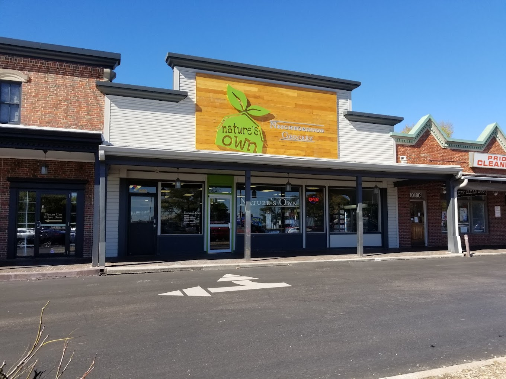

About us
Kansas City's Independent Health Food Market
Two locations to buy local, live healthy
Healthy living starts with quality choices. Nature's Own is a small, independently owned grocery and a longstanding part of the Kansas City community. Our knowledgeable staff is here to make healthy, nutritious food affordable and easy to find, with fresh local and organic produce grown without harmful pesticides.